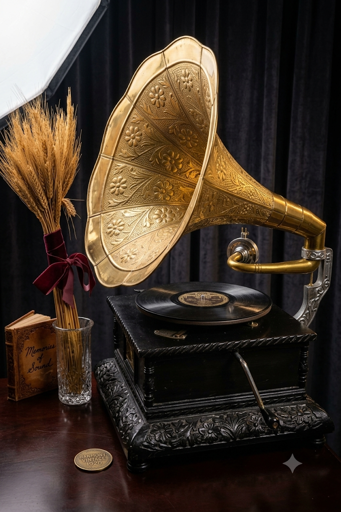

Woh dhunein jo waqt ke saath purani zaroor hui, magar dil se kabhi nahi gayi. 80's aur 90's ke khoobsurat nagmon ke saath ek yaadgaar safar.

Har zamaane ki apni awaaz, apna andaaz aur kuch aise geet hote hain jo zindagi bhar saath rehte hain.
Har gaane ke peeche ek kahani aur har dhun ke peeche ek purani yaad.
Har kuch seconds mein ek nayi yaad. Bilkul un purane gaanon ki tarah jo humein kisi aur waqt mein le jaate hain.